In the fall of 2017 I swapped my tired ea82 for a 160k mile ej22. The swap went well and everything ran reliably until I blew the headgaskets a few months later. I should have changed the headgaskets before swapping, but I like to learn the hard way.
I initially did the swap with the factory ea82 radiator. I had read it was sufficient for the larger engine. Though that may be true, I took the opportunity of an empty engine bay while doing my headgaskets to fit the EJ Radiator in. This will not only help with cooling capacity, but enable the EJ hoses to be used too. The hoses to adapt the EJ22 to EA82 radiator worked, but were somewhat convoluded and made finding hoses difficult. The day I blew my headgasket, started with a hose splitting in half. As a preventitive I wanted to build a spare lower. Having to hunt down two seperate hoses to frankenstein into a useable one is harder than you may think- especially in an emergency and when time is a factor.
In case you want the secret sauce: EJ22 Upper hose still works with an ea82 radiator, you just need to cut it down a little and use a piece of old hose to adapter the larger diameter hose to the radiator. For the lower, EJ22 hose works still - cut it down a little and splice it together with a 2003 Ford Focus Lower hose. I don't have pictures, but if you get the hoses in your hand you'll know what to do. But don't do that. I think its more of a pain than adapting the EJ22 Radiator.
Damage
I drove the 2017 Oregon Gambler 500 (and subsequent Mtn Roo meetups) with a skid plate attached to the factory plate mounts with stock height in the front. As you can see here, the lower radiator support is beaten to hell. It was sitting at the center 1 inch higher than it did the day it left it's home in Japan.
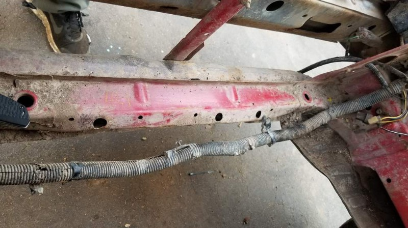
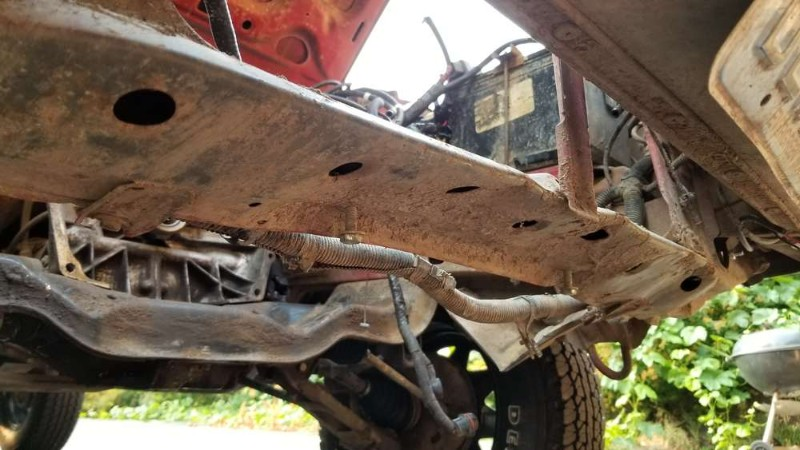
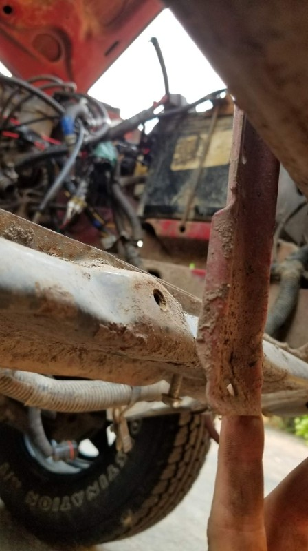
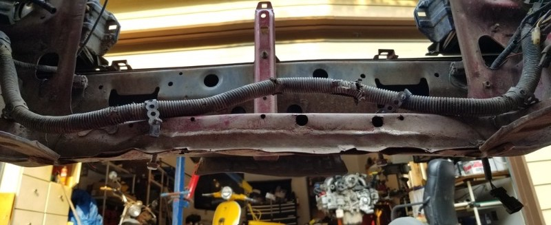
Measuring
I over cut the slot in the lower-support to allow for me some wiggle room once I was fine tuning the slot later. The slot was cut because the EJ radiator is roughly 2 inches too tall for the space, even when your lower support isnt beat up. If you aren't pressed for time like I was, I suggest cutting the entire lower support out and building an entirely new cross-member. If you do decide to cut a slot rather than replace the whole support, I found that a 2x4 acts a a pretty decent stand in for the radiator. Keep in mind, it is 1/8th less-wide than the radiator.
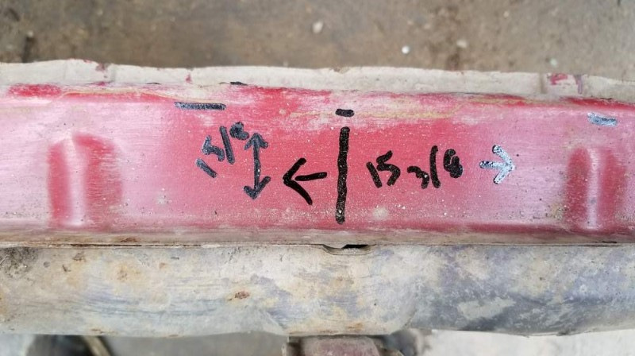
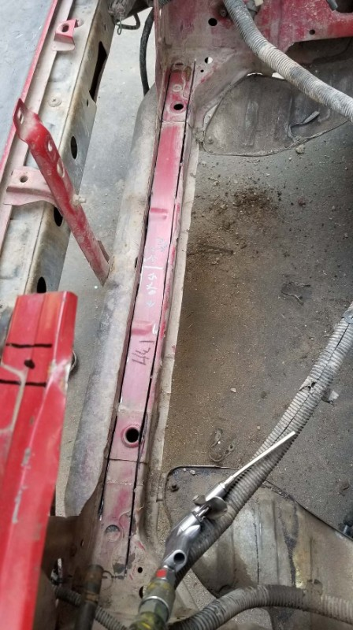
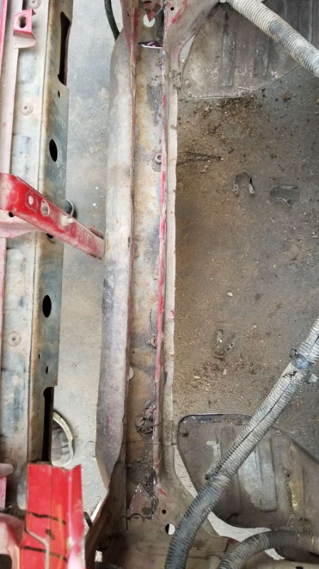
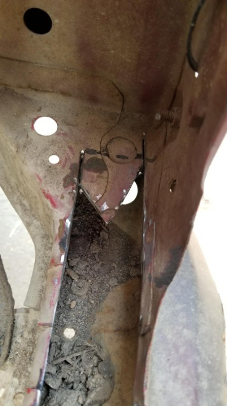
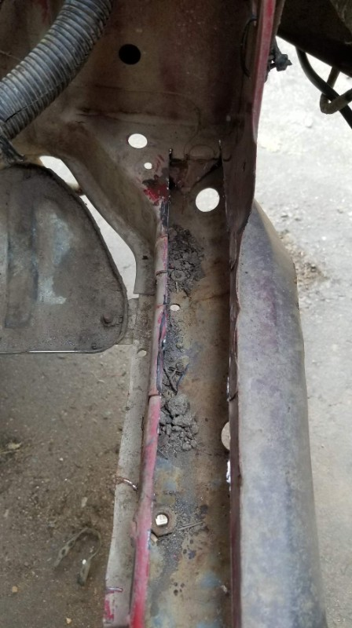
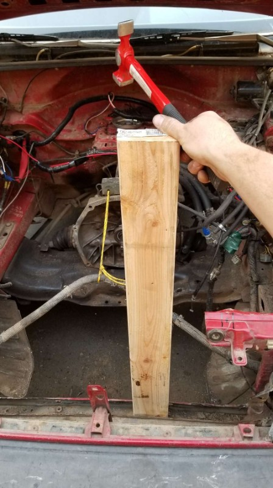
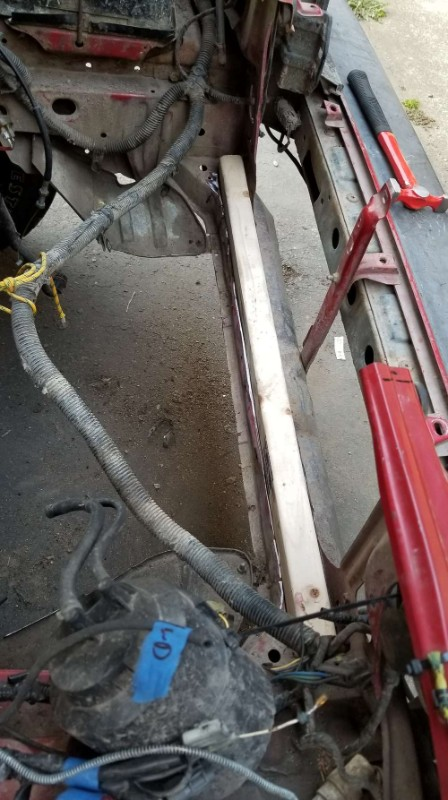
New support
I ended up cutting the side closest to the engine completely out, and wrapping that with a piece of 1.5x1/8 angle iron and boogering it up liberally with my MIG welder.
Note that the EJ Radiator is attached differently than the EA radiator was. Pins held the EJ to the frame in the car it is meant for from above, the EA is secured from the front with machine bolts. My solution was to weld nuts under my new upper support and have the bolts fit into the EJ bushings.
TIP: The bolts I used needed to be shortened slightly, this can be easily done by threading a nut onto the bolt and cutting it to the desired length. Then when you remove the nut, it chases the threads like a die would. I also sharpened mine to a dull point, so they would self-center in the radiator bushing.
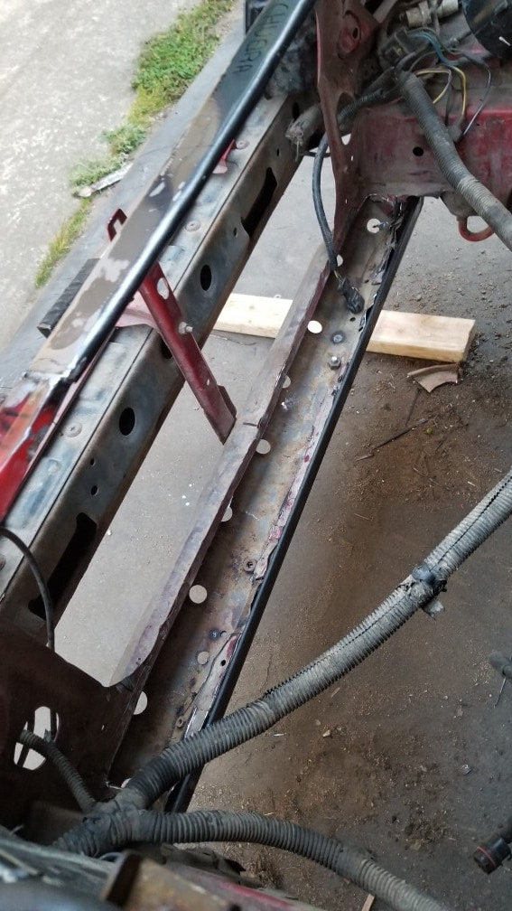
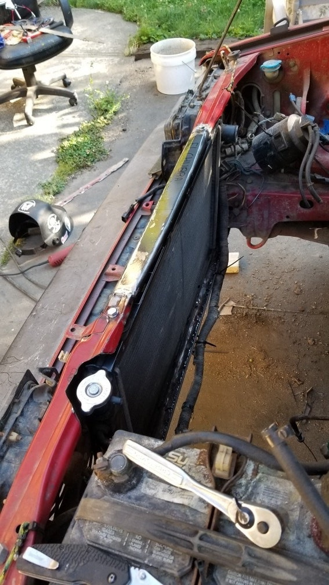